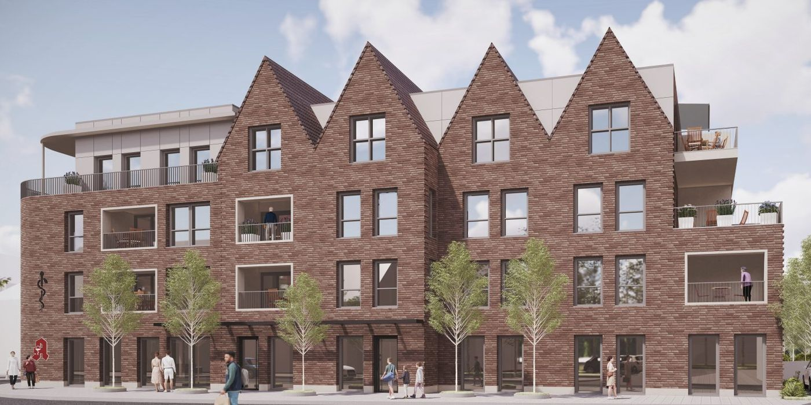
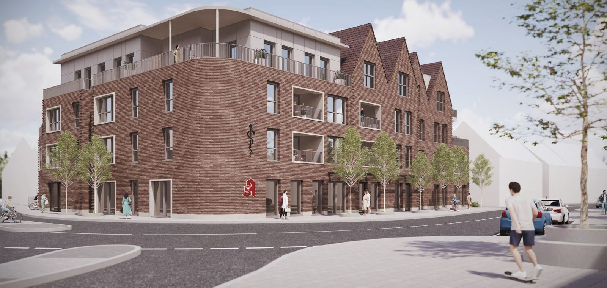

Hauptstandort
Wettringener Straße 2
Louise Weritz, Annette Schön, Dr. Ekkehard Grützner
Sprechzeiten siehe unten
Aus zwei Hausarztpraxen ist eine geworden: sechs Ärztinnen und Ärzte für Metelen. Bis zum Umzug 2027 kommen Sie bitte weiter in Ihre bisherige Praxis.
Sechs Ärztinnen und Ärzte für Metelen, unter einem Dach im Neuen Postquartier.
Wir suchen eine Hausärztin oder einen HausarztHeute
Ab 2027
Hauptstandort
Louise Weritz, Annette Schön, Dr. Ekkehard Grützner
Sprechzeiten siehe unten
Zweigpraxis Ärzte am Schilden
Dr. Hedwig Niehoff, Dr. Andrea Viermann, Michael Niesen
Sprechzeiten siehe unten
Ein Haus für alle
Louise Weritz, Annette Schön, Dr. Ekkehard Grützner, Dr. Hedwig Niehoff, Dr. Andrea Viermann, Michael Niesen
Anschrift und Sprechzeiten folgen zum Umzug

Grippe- und Coronaimpfung sind ab Oktober wieder möglich. Mehr dazu
Alle drei Wege sind online rund um die Uhr offen, auch wenn die Praxis geschlossen ist.
Für Patientinnen und Patienten der Praxis. Es gibt verschiedene Terminarten, zum Beispiel Sprechstunde, Infektsprechstunde oder Check-up. Bitte bringen Sie Ihre Versichertenkarte mit.
Seit dem 01.03.2026 stellen wir beides nur noch in Ausnahmefällen zur sofortigen Mitnahme aus. Bestellen Sie online oder über den Bestellzettel in der Praxis.
Online-Termine sind Bestandspatienten vorbehalten. Wenn Sie neu zu uns kommen möchten, stellen Sie bitte eine Anfrage.
Vorschau: Nach dem Umzug steht hier eine einzige Tabelle.
| Tag | Wettringener Straße 2 | Schilden 4 |
|---|---|---|
| Montag | 7:30 bis 12 und 14 bis 17 Uhr | 7:30 bis 12 und 15 bis 18 Uhr |
| Dienstag | 7:30 bis 12 und 14 bis 17 Uhr | 7:30 bis 12 und 15 bis 18 Uhr |
| Mittwoch | 7:30 bis 12 Uhr | 7:30 bis 13 Uhr |
| Donnerstag | 7:30 bis 12 und 14 bis 17 Uhr | 7:30 bis 12 und 15 bis 18 Uhr |
| Freitag | 7:30 bis 12 Uhr | 7:30 bis 13 Uhr |
Vor dem Arzthaus sind genügend Parkplätze vorhanden. In der Nachbarschaft gibt es mehrere Einkaufsmöglichkeiten.
Die Praxisräume sind komplett barrierefrei über einen großen Aufzug zu erreichen.

Bis zur Fertigstellung des Neubaus im Ortskern bleiben beide Standorte wie gewohnt bestehen. Alle Ärztinnen und Ärzte arbeiten an ihren bisherigen Standorten. Bitte kommen Sie weiter in Ihre bisherige Praxis.
Sobald Anschrift und Umzugstermin feststehen, finden Sie beides hier.
Sie wählen Ihre Hausärztin oder Ihren Hausarzt als erste Ansprechperson für alle medizinischen Fragen. Bei uns laufen Befunde zusammen, Doppeluntersuchungen werden vermieden. Mit Ihrer Teilnahme stärken Sie die hausärztliche Versorgung in Metelen.
Ab Oktober
Termine für die Sonderimpftage sind online buchbar. Privatversicherte benötigen für die Grippeimpfung vorab ein Rezept aus der Praxis. RKI-Faktenblatt Grippe
01.04.2026
Ihre Bescheinigung geht weiterhin elektronisch an die Krankenkasse. Sie können sie in der App Ihrer Kasse einsehen. Eine SMS versenden wir nicht mehr.
Zahlung
Bitte direkt per EC-Karte zahlen. Überweisungen und Kreditkarten sind nicht möglich.

Ab sofort gesucht
Wir suchen eine Allgemeinmedizinerin oder einen Allgemeinmediziner zur Verstärkung unseres Teams. Lernen Sie uns bei einem Probearbeitstag kennen.
Wir melden uns bei Ihnen. Eine Telefonnummer oder E-Mail-Adresse genügt.
Kein Notfallweg. Bitte nennen Sie hier keine Beschwerden oder Diagnosen. Im Notfall: 112 oder 116 117.
Auf der fertigen Seite käme Ihre Nachricht jetzt bei der Anmeldung an.